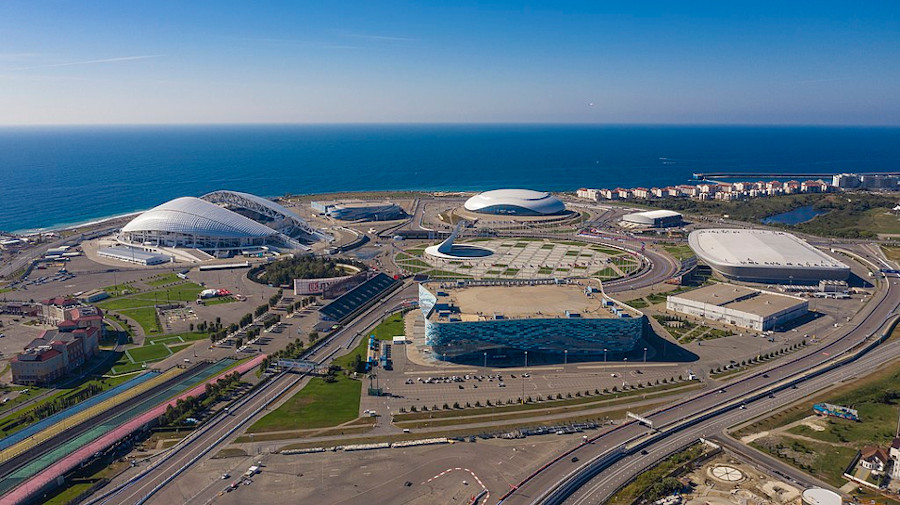
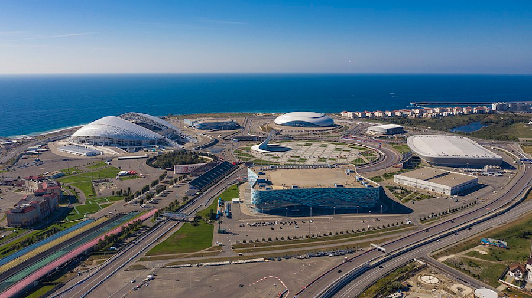

SPOTLIGHTING SOCHI
There are a number of activities Sochi has hosted in recent years. Olympics and World cup matches to mention a few.
SPORTING EVENTS
Sochi played baby-sitter to some matches during the FIFA world cup tournament .
which in a nuttshell refers to when all countries that have qualified for the football tournament
participate so that a world champion is crowned as a result

OLYMPICS
In the year 2014 Sochi became the fisrt ever sub tropical city to host winter olympics

RUSSIAN GRAND PRIX
The world famous formula 1 race series was also hosted in Sochi in the years 2016,2017 and 2020. They
took place at the Sochi Autodrome curcuit built around the Olympic Park.It will countinue to be scheduled for the next coming years ,
as the Formula 1 board have added Sochi Autodrome to the calander.

 
